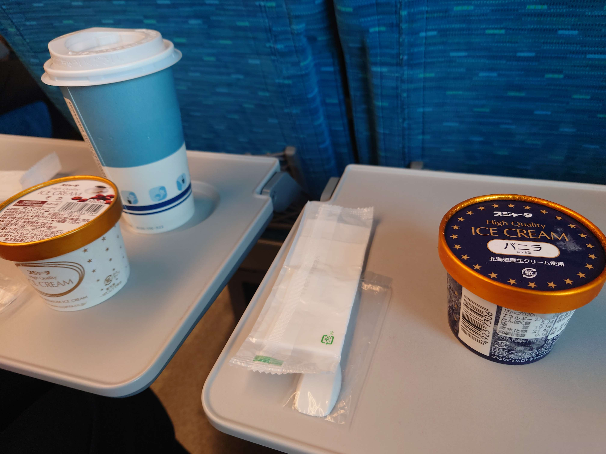
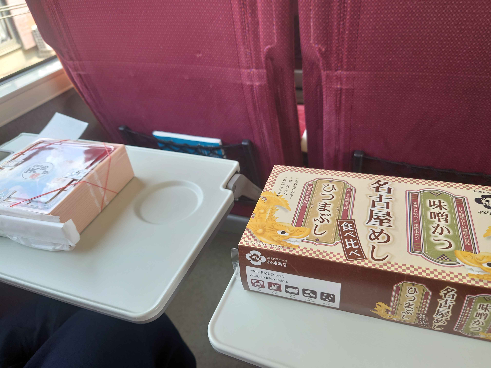
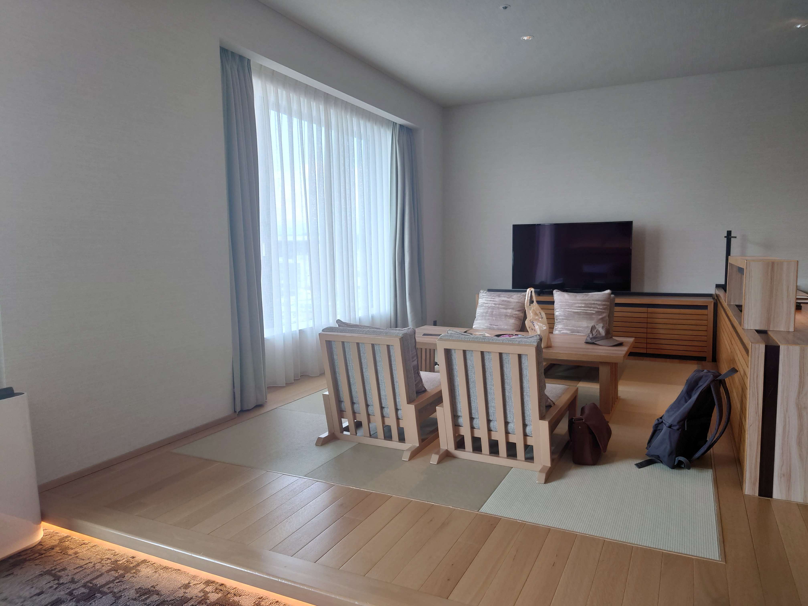
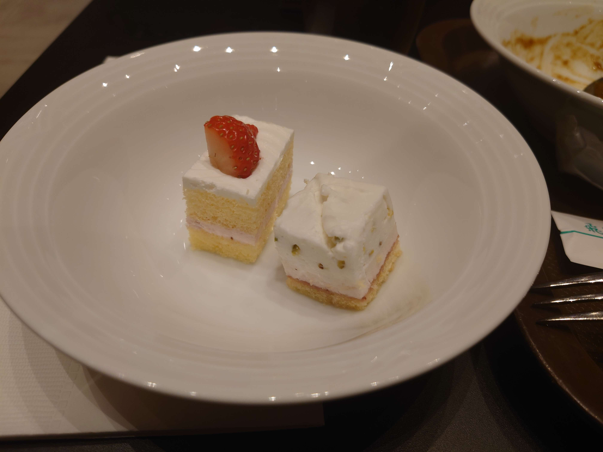
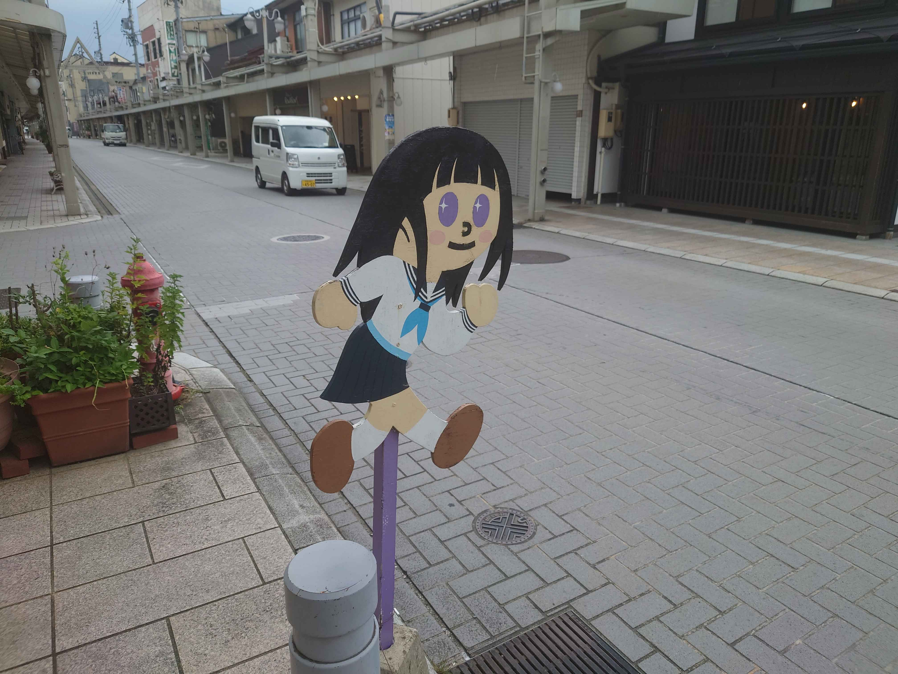
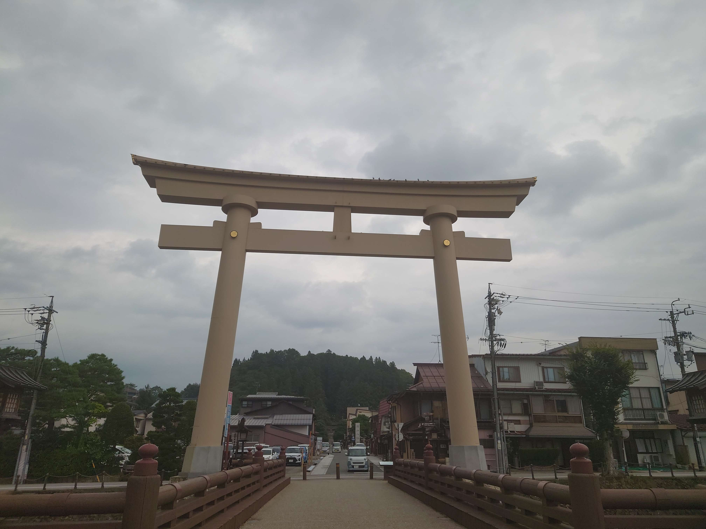

高山グリーンホテルに泊まった話
旅行に行ってきました。
場所としては岐阜の山奥1です。
新幹線で名古屋へ

シンカンセンスゴイカタイアイスをいただきながら、まずは名古屋へ。
なお、このアイスはもう車内では販売されておらず、駅の売店で購入する必要があります。
名古屋から高山線特急ひだ

せっかく名古屋なので、駅弁でひつまぶしと味噌カツを。
名古屋から高山駅へと向かうわけですが、これが長い。
高山は岐阜の北のほうにあって、名古屋からだと特急でも2時間半かかります。
名古屋から岐阜までは、席に対して後ろ向きに進行、岐阜からは方向転換して前方に進みます。
今回は左側の座席を取ってしまいましたが、道中の車窓から見える観光ポイント的に、右側がオススメです。
とにかく長いのと、キョロキョロと窓の外を見たりしていたせいか、かなり酔いました。2
高山グリーンホテル

ナガノ先生も絶賛のホテル。
ちょっとお高い部屋に奮発して一泊二日で行ってきました。
高山駅から徒歩数分。一応駅からはシャトルバスも出ていますが、本当に必要なのか疑わしいほど近くにあります。
観光もできたら良いねと話していましたが、酔ったこともあってグロッキーになり、お部屋でゆったりしました。
かなり遠いので、観光も考えると二泊三日のほうが良かったかも。

夕食と朝食はビュッフェです。あれもこれもとつい取りすぎちゃうんですが、甘いものは別腹を初めて実感したかもしれません。
— ナガノ (@ngntrtr) March 27, 2024
ナガノ先生絶賛の作務衣も買いました。1着6000円ちょっと。
ホテル側もこの宣伝効果を認識しているようで、売り場にはちいかわのご当地キーホルダーもありました。
作務衣は部屋にも備え付けてあり、ホテル滞在中は自由に着て良いことになっています。
着心地良いですね。通気性は良いが熱は逃げにくいという不思議な感覚。
ベッドの中が暑くて、なかなか寝付けませんでしたが、それ以外は満足です。温泉も食事も良かったです。
1階カフェに季節限定の桃スイーツがあったんですが、気になっていたシュークリームは終わってしまっていました。
桃のショートケーキがとてもおいしかったんですが、写真を撮りそびれていることに今気づきました。
高山観光
帰りの電車に乗るまでの間、近くをブラブラ観光することに。

川です。
ファミリーストアサトウのガンダムもどき

スーパー「ファミリーストアサトウ」に置かれていた謎のガンダムもどき。
特に説明もなく、謎の存在が店内2階の隅に鎮座していました。
ちょっと前傾姿勢なのは、前方に向かって飛んでいる姿を意識してのものでしょうか。
ググると3年前にはすでに存在していたらしいことがわかります。
飛び出しえる

氷菓の聖地だからか、飛び出し坊やの千反田えるカスタムが置かれていました。
ググるとここに置かれた経緯を知る人のブログ記事がヒットします。
櫻山八幡宮

櫻山八幡宮まで来ると、観光客も全然いませんでした。
メインストリートのほうには、主に外国人観光客がたくさんいました。
麺屋しらかわ

味玉入り中華そばを頂きました。
30分並びましたが、並んだ甲斐のあるおいしさでした。
大盛りはこの倍くらいあるとのこと。
気の良いあんちゃん二人が厨房に。気さくに話しかけてくれます。
近くには別邸やら、雷やらの他のバリエーションのしらかわもありました。
何か違うのか、本店？のほうには行列ができていましたが、他は全く並んでいませんでした。